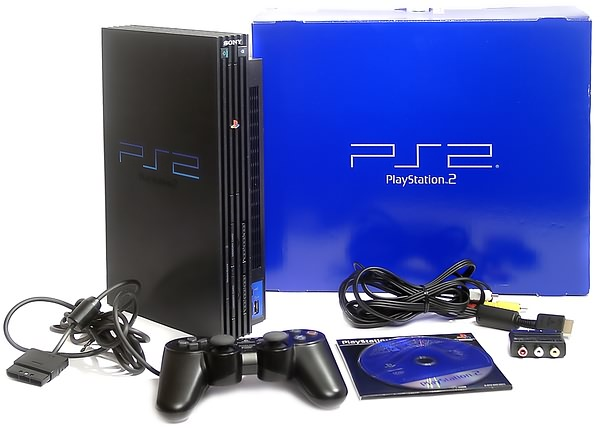

Начало этого века ознаменовалось невиданным подъемом в индустрии игровых консолей. Сразу три крупнейших игрока на IT-рынке анонсировали свои новые устройства на начало 2001 года. Высокобюджетные рекламные кампании сделали эти имена более чем известными — конечно, речь идет о Sony PlayStation 2, Microsoft Xbox и Nintendo Gamecube. Аналитические компании предсказывали настоящую бурю продаж этих консолей, но на деле цифры продаж оказались выше самых смелых прогнозов. Общий объем проданных консолей в 2002 составил около 50 миллионов устройств, и среди них с громадным отрывом лидировала Sony PlayStation 2 — 26 млн. проданных приставок, что больше, чем вместе взятые Xbox и Gamecube.
Почему победила PlayStation 2? Сказалось довольно много факторов. Во-первых, марка Playstation является более чем известной в игровом мире — в отличие, скажем, от «первопроходцев» Xbox и Gamecube. Благодаря этому и колоссальному влиянию Sony количество анонсированных высококлассных, «именитых» игр для PS2 значительно превысило набор игр для консолей-конкурентов. А ведь в мире игровых приставок именно игры являются тем, на чем зарабатывают и гейм-разработчики, и производители приставок. Игровая консоль является своего рода связующим звеном между игрой и потребителем. При том, приставки часто продают ниже себестоимости, искусственно занижая цены до $150-200. Подобная схема применяется в индустрии сотовой связи: операторы продают телефоны вместе с контрактами на подключение дешевле стоимости самого аппарата, тем самым «подсаживая» абонента на собственные услуги связи. Игрок, который приобрел ту или иную консоль, далее будет вкладывать деньги в игры именно для нее (в среднем игра для современной приставки стоит $30-70). Таким образом платформа, поддерживаемая большим числом качественных и популярных игр, имеет большее число продаж.
И, наконец, Sony умудрилась выпустить свою приставку первой. Это произошло в самом конце 2000 в Европе и в 2001 в США. Официальная версия для России и стран СНГ появилась, разумеется, гораздо позже, и по более высокой (порядка $250) цене. Тем не менее она здесь, и мы можем основательно ее изучить.